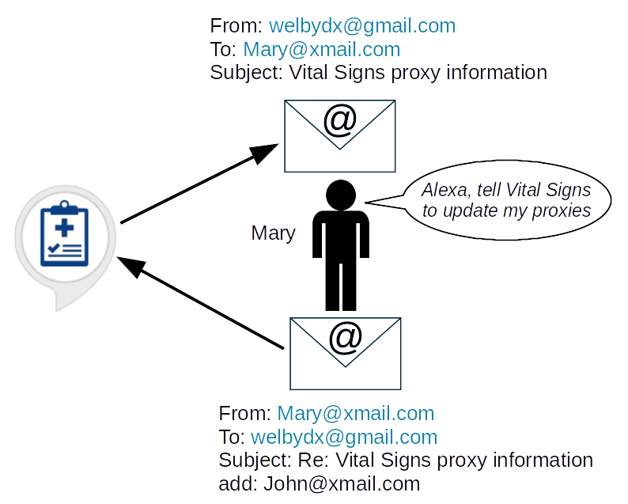

Vital Signs**
**Disclaimer: This tool is for informational purposes only, and is not intended as a substitute for professional medical advice. Always seek input from a qualified health provider regarding any medical condition you may have. In case of a medical emergency, seek treatment immediately.
Vital Signs (a.k.a. “Welby’s” Vital Signs on Google) is a voice assistant app currently available on both the Alexa and Google platforms that assists users in collecting, analyzing, and sharing health metrics with caregivers. I was inspired to develop the app during my participation in the “PARTNERED” research project at Johns Hopkins, which just recently concluded. Vital Signs enables patients like myself to track our PGHD (Patient Generated Health Data), have the data analyzed by smart “bots”, and share results with caregivers.
Vital Signs is designed to be customizable, so that it can be easily adapted to different use cases. By default, Vital Signs records the four primary vital signs: body temperature, respiration rate, pulse, and blood pressure, but the app can be modified to collect any set of health metrics simply by emailing welbydx@gmail.com a new voice script that specifies what data to collect. In the same fashion, the app can be tailored with user-defined “webhooks” to integrate custom techniques for analyzing and plotting the data.
To get started with Vital Signs, do the following:
First, for Amazon devices, follow these instructions to enable the skill (there’s no need to do this on Google)
Second, grant the skill/action permission to access your first name and the email address associated with your Amazon/Google account. Vital Signs uses these to communicate with you during various dialogue interactions.
For Alexa devices, open the Alexa app – or login to alexa.amazon.com – then select: Skills > Your Skills > Vital Signs > Settings > Manage Permissions, and turn on the requested options.
For Google devices, the action will talk you through the steps to link your account.
Finally, ask Alexa/Google to “Talk to (Welby’s) Vital Signs”, and create your account.
Vital Signs understands the following commands:
“Create account” will set up your initial Vital Signs account.
“Enter data” will prompt you for your current vital signs. By default, these include your blood pressure (expressed as number “over” number), your pulse (in beats per minute), your respiration rate (in breaths per minute), and finally, your body temperature in degrees Fahrenheit (expressed as number “point” number).
“Analyze data” will provide stats on the data you've entered, one health metric at a time. Stats include the minimum and maximum values for the metric, the median, the average, and the standard deviation. Metrics are stored under separate columns within the history file. To get stats for just a particular metric, provide the column # for the metric as part of the utterance, e.g. “analyze data for column two”, or simply “analyze column two”.
“Send report” will email you a file (csv format) with your vital sign history, as well as a graph of the data. In addition to your own data, you’ll also receive the vital sign history file and graph for any user who has identified you as their proxy. See below for more information about proxies.
“Erase data” will clear out your entire vital sign history.
“Update proxies” will email you instructions for how to add or delete a proxy on your account.
“Delete account” will completely remove your Vital Signs account, any data stored under the account, and all of your proxy assignments.
We’ve all been in situations where we’d like to know how someone is doing, but we can’t be around to check on them. The Vital Signs proxy feature is designed to handle this. Let’s say Mary is currently a Vital Signs user, and John – Mary’s son – would like to access Mary’s data. Here’s how John (with Mary’s permission) can do this:

First, John needs to create his own Vital Signs account. John may not be interested in recording/tracking his own vital signs, but he still needs to have an account if he wants to read his mom’s data.
Next, Mary needs to give John permission to access her data, i.e. she must designate John as a proxy. To do this, Mary opens Vital Signs, and tells the assistant she wants to update her proxy info. The tool then sends Mary an email message that lists her current proxies, and gives instructions for sending a reply that adds (or deletes) a proxy on her account. Mary then submits a reply adding John as a proxy. Afterwards, Mary can ask Vital Signs to resend her proxy info, so she can confirm that John has been added to her proxy list.
Lastly, once John has been named as Mary’s proxy, then whenever he asks Vital Signs to send a report, the tool will send John both his own data, as well has his mom’s.
There is no limit on the number of proxies a user can associate with his/her account. Thus, for example, if Mary had other children she could make all of them proxies. Similarly, there is no restriction on the number of times a single user can be named as a proxy for someone else. So, for example, if John also wants to keep tabs on his dad, Jim, then Jim can also name John as a proxy on his (Jim’s) account.
When you enter data into Vital Signs, the tool follows a script to prompt for input. Here’s the default script:
What is your
"temperature", in degrees Fahrenheit?
What is your
"respiration rate", in breaths per minute?
What is
your "pulse", in beats per minute?
What is your "blood
pressure"?
#Temperature,Respiration,Pulse,Systolic,Diastolic
Vital Signs uses the words enclosed “in quotes” to build the confirmation message after you enter all of your data. Those words are also used as the column headings in your report.csv file, unless you supply a specific header line (beginning with “#”) at the end of the script.
In order to replace the default script with one of your own, simply send an email to welbydx@gmail.com with the word “script” somewhere in the subject line. For example, here’s an email that changes the script to one that tracks your current weight and how many calories you’ve eaten:
From:
Mary@xmail.com
To:
welbydx@gmail.com
Subject:
New vital signs script
What is your "weight",
in pounds?
How many “calories” have you consumed?
Data values can be numbers (with or without decimals), names, or yes/no responses. When appropriate, a data value can be left blank by responding “skip”, “blank”, “empty”, or “null” when prompted for input.
For users who want to customize how their data is plotted & analyzed, they can specify their own webhooks (URLs) for each of these functions. The “send report” command generates plots by submitting the user’s report.csv data to a webhook. The app passes the csv file as raw HTTP POST data (not a multipart form!), and expects an image/png in return. The default webhook for generating plots is posted on the Vital Signs github site. Users can replace the default webhook with one of their own simply by sending an email to welbydx@gmail.com with the word “plot” somewhere in the subject line, and then including the webhook URL in the body of the message. The “analyze data” command also employs a webhook to process the csv data. The default URL can be replaced in the same manner as indicated above for custom plots, i.e. by sending an email to welbydx@gmail.com with the word “analyze” somewhere the subject line, and entering the URL in the body of the message. The app passes the csv file as raw HTTP POST data (not a multipart form!), and expects English text in return. The text should be a description of the analysis in text/plain format that will be voiced by the assistant device. If the user invokes the analyze command with a column #, that # will be passed to the webhook as a “column” variable in the QUERY_STRING field. The default webhook for analyzing csv data is posted on the Vital Signs github site.
Lastly, in some cases a user might want to replace the csv file that’s stored under their system account with a different version. This can be done by sending an email to welbydx@gmail.com with the word “data” somewhere in the subject line, and the new csv contents in the body of the message.
This privacy notice applies to both the Vital Signs Alexa skill and Google action. In general it covers:
What personally identifiable information (PII) is collected while using the skill/action, how it is used, and with whom it is shared.
The security controls in place to protect your information.
How you can administer your information.
Vital Signs is intended for personal use. The information you share with the tool – your first name, email address, and vital sign data – is not sold or shared with any other public or private entity. Only you, your designated proxies, and myself (as system administrator) have access to the data.
A variety of security controls have been implemented to protect your data:
Your vital sign information is stored on a virtual private server (VPS) that is physically hosted and secured by Amazon Web Services (AWS).
The Vital Signs account on the VPS is locked down so it is only accessible to the system administrator (me).
Your name and email address are stored as clear text on the server, but your vital sign history file is encrypted on disk using the Linux ccrypt utility. The encryption key is not stored locally, but is passed to the server by the skill/action.
Whenever your data is transmitted across a network (e.g. during HTTP and SMTP sessions), it is encrypted using TLS.
The tool uses gmail to send/receive email. All email folders associated with the administrator account are purged daily.
If at any time you’d like to remove your information from the system, simply ask the skill/action to erase your data, which removes just your history file, or to delete your account, which removes everything about you: your name, email address, and vital sign history.
It’s worth saying a word about HIPAA. HIPAA stands for the “Health Insurance Portability and Accountability Act”. It’s a law passed back in 1996 that mandates certain data privacy and security provisions to safeguard medical information. Does HIPAA apply to information that a patient submits to a health app like Vital Signs, and if so, how? Thankfully, the Department of Health and Human services has already considered this scenario, and published guidelines on their website to assist app developers. According to those guidelines, Vital Signs is not subject to HIPAA regulations. Here’s an excerpt from the guidelines:
Scenario:
Consumer downloads a health app to her smartphone. She populates it with her own information. For example, the consumer inputs blood glucose levels and blood pressure readings she obtained herself using home health equipment.
Based on the Facts Presented in the Scenario, Is App Developer a HIPAA Business Associate?
No. Developer is not creating, receiving, maintaining or transmitting protected health information (PHI) on behalf of a covered entity or another business associate. The consumer is using the developer’s app to help her manage and organize her information without any involvement of her health care providers.
I’d very much welcome feedback on the tool. Feel free to email me your comments at welbydx@gmail.com. For additional details about how the tool is implemented, you can check out the software on my github site.